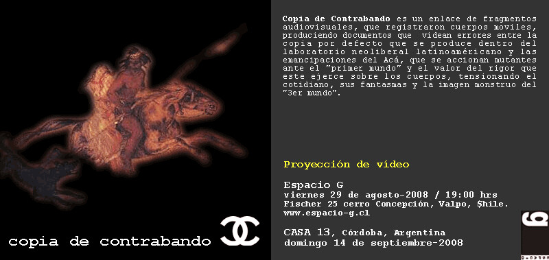
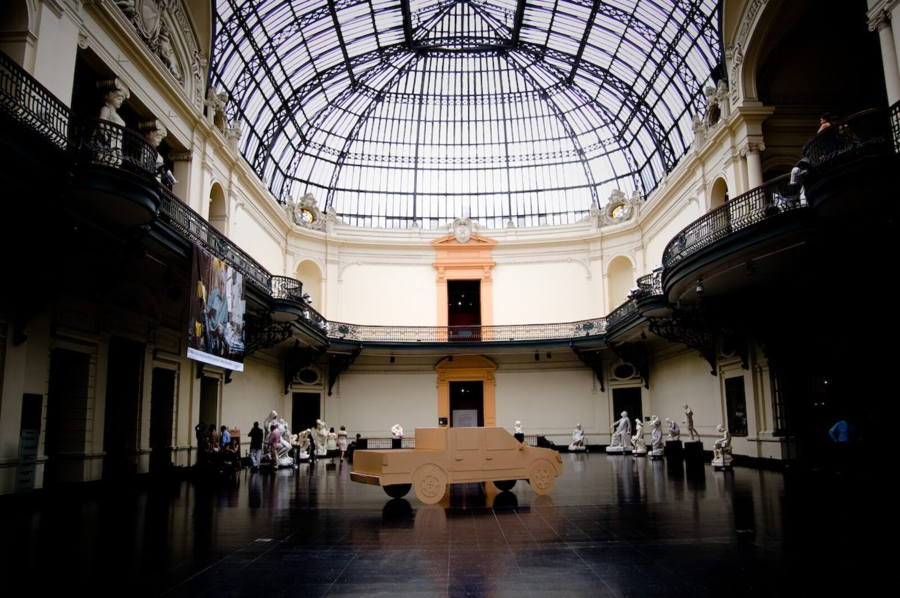
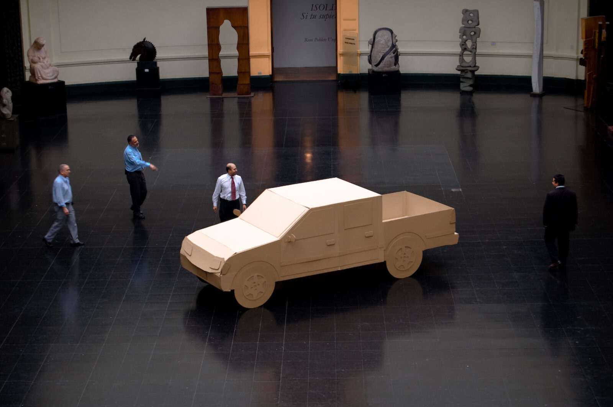
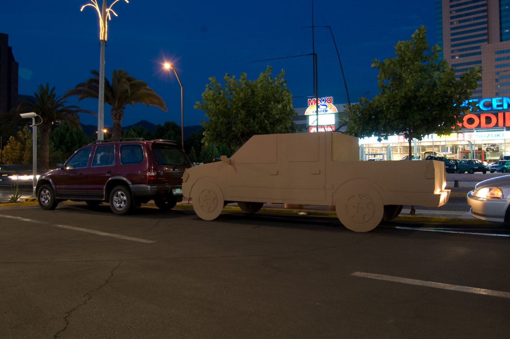
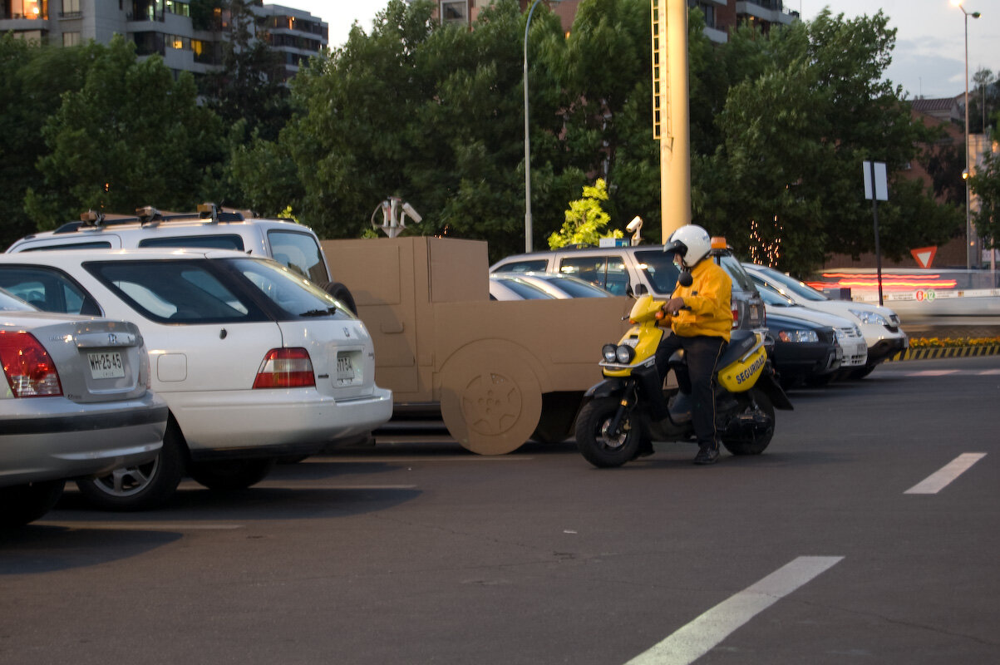
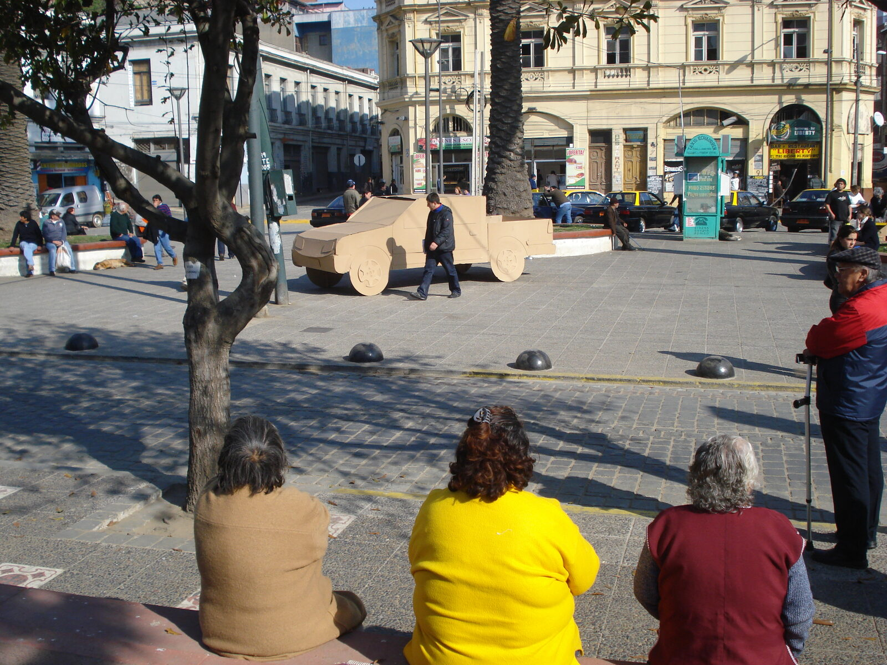
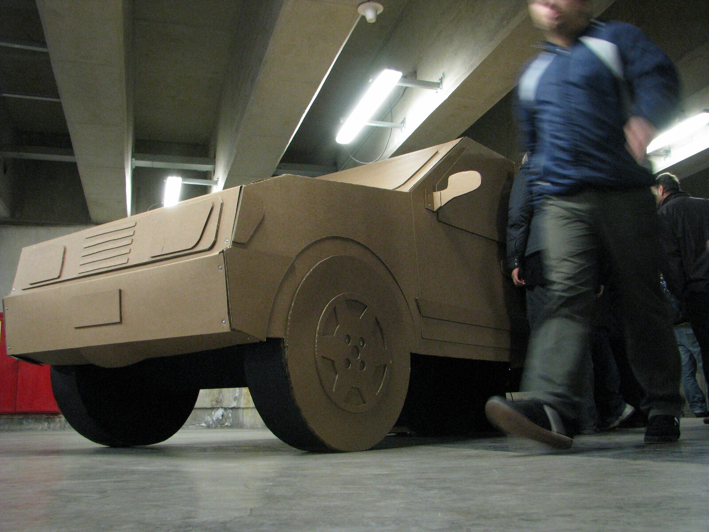
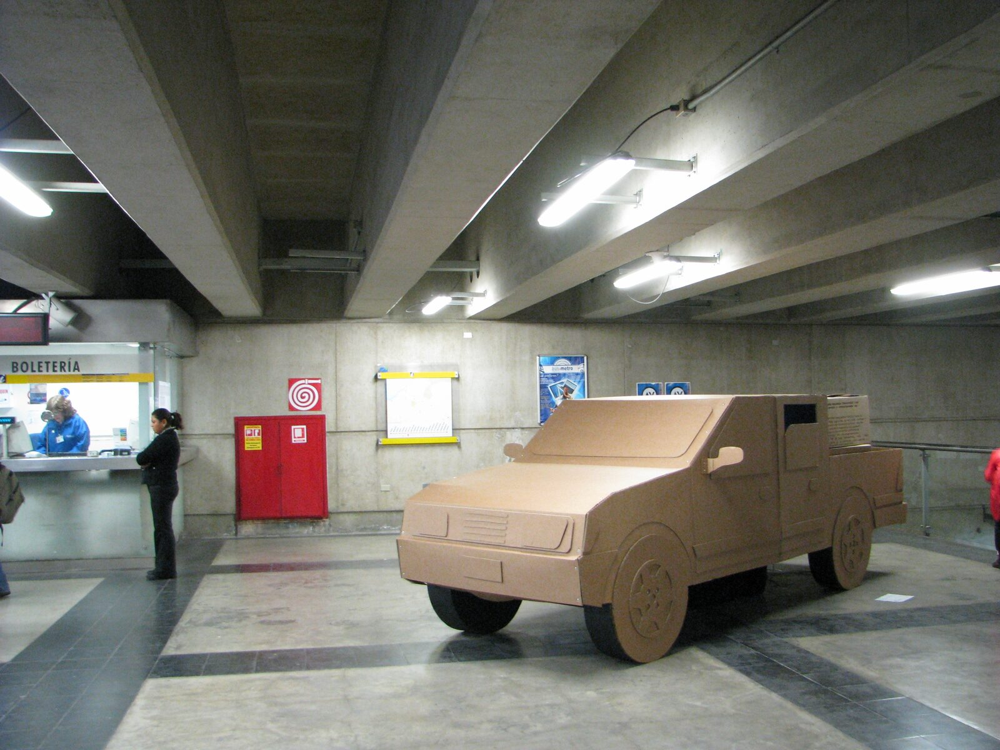

Dossier · Pieza de Cartón
Pieza de Cartón / LUV
Construcción de una camioneta doble cabina de cartón corrugado, modelo Chevrolet LUV (Light Utility Vehicle), hecha para ser ocupada y estacionada en diversas locaciones urbanas.
Paseo a la Capital
Paseo a la Capital consistió en un recorrido articulado en dos intromisiones: una en el Museo Nacional de Bellas Artes y otra en el Centro Comercial Parque Arauco, ambas en la ciudad de Santiago.
En un segundo momento, el trayecto partió desde la Plaza Echaurren, en Valparaíso, atravesando los edificios arruinados por la explosión de calle Serrano y el centro financiero histórico de la ciudad, hasta quedar estacionado frente a la Galería Espacio G, en el marco de la exposición Más realidad (ejercicios acerca de la mentira).
El registro de este recorrido formó parte, posteriormente, de la exposición Copia de Contrabando, presentada en la ciudad de Córdoba, Argentina.
A su vez, una segunda versión de esta camioneta fue estacionada en la Estación de Metro Miramar, en Viña del Mar, con motivo del Día Nacional de las Artes Visuales —organizado por MERVAL y el CNCA— cuyo propósito era llevar muestras artísticas, instalaciones y activaciones culturales directamente a las estaciones de la red de trenes.











33°26′S · 70°39′O